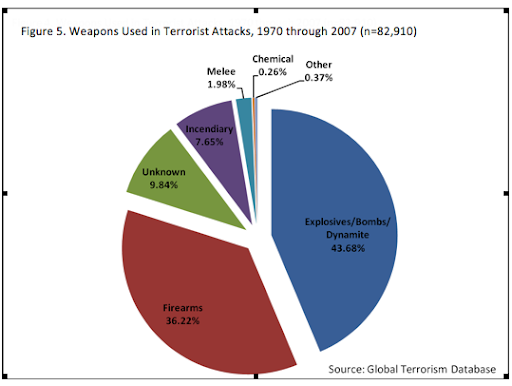

Terorismul este o tactică de luptă neconvențională folosită pentru atingerea unor obiective politice.
El se bazează pe acte de violență spectaculară acționate asupra unor populații neimplicate în mod direct
în conflict dar cu potențial de presiune asupra conducerii, câteodată conducerea face acte de terorism
asupra populației (stat, organizații, categorii sociale sau, împotriva unui grup de persoane civile) în
sensul
scontat de teroriști - producerea unui efect psihologic generalizat de panică și intimidare, augmentat
de folosirea manipulativă a mediei, cu scopul atingerii unui obiectiv greu de realizat prin mijloace
democratice sau convenționale.

Majoritatea analiștilor susțin că terorismul are o cauză strict politică. Orice mișcare
teroristă ce capătă suficient acces la putere politică pentru a-și promova obiectivele, renunță la
terorism din proprie inițiativă.
Motivele specifice ale terorismului pot fi foarte diverse, dar cele mai comune sunt:
Obținere de bani și avantaje: Unul dintre scenariile cele mai temute în țările vestice este obținerea de
arme neconvenționale (chimice, biologice, nucleare) de către un grup nestatal, stat instabil sau care
are interesul să la comercializeze.
Dorința de a răspândi un mesaj: Actul de violență este comis numai pentru a atrage atenția unei stări de
fapt, a transmite un mesaj sau pentru a aduce niște idei în dezbaterea publică. Teroriștii sunt mai
preocupați de cantitatea și calitatea "timpului de antenă" decât de provocarea unui număr mare de
victime.
Terorismul „justițiar”: Terorismul justițiar a fost numit astfel deoarece are ca țintă și pretext
răzbunarea și pedepsirea unor acțiuni considerate de teroriști nedrepte. Terorismul justițiar este
destul de rar, fiind de obicei responsabil pentru asasinate politice.
Fanatismul religios: Fanatismul religios poate constitui un substrat fertil, o bază de susținere a unor
grupări, sau organizații teroriste, deși adesea, ei folosesc manipulativ acest fanatism pentru propriile
interese. Motivul real al terorismului Al-Qaida rămâne ocult, dar propaganda acestui grup se folosește
abil de fanatismul islamic pentru a justifica politica de teroare și pentru a amplifica efectele actului
terorist.
Subminarea autorității de stat: Deși multe grupări teroriste urmăresc ca obiectiv secundar subminarea
puterii de stat, numai pentru mișcarea anarhistă a reprezentat motivul principal pentru activitatea
teroristă.
Lupta pentru eliberare, emancipare și obținerea puterii politice: Se spune că în timp ce insurgența este
strategia săracului, terorismul este strategia săracului disperat. Multe grupări teroriste sunt motivate
de idealuri legitime ce nu pot fi obținute pe căi politice, militare sau economice.